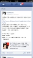

PARTICIPANTS:
DB ID: 14
Current name: 佳代 kayo naruto
Address book name: 表参道パーティーかよ
User name: 佳代
Phone Number:
Key:
DB ID: 0
Current name: You
Address book name: You
User name:
Phone Number:
Key:
Messages:
2012/12/17 19:15:36, "14:佳代 kayo naruto":
None
2012/12/17 19:18:07, "0:You":
Call History : 15000 millisecs, Result: 16
2012/12/21 21:09:54, "0:You":
FBのフレンドになって、ね！
2012/12/22 09:54:17, "0:You":
かよちゃん！おはよう！
今日は駅が遠いですよ
王子駅前の駅なんです
2012/12/22 12:25:27, "0:You":
17:30に王子駅で集合
これそう？
2012/12/22 16:49:45, "14:佳代 kayo naruto":
ごめんなさい。熱出して寝込んでた
2012/12/22 16:54:44, "0:You":
そうかそうか？
寒いんですからね
風邪だけは気をつけて
2012/12/28 01:47:11, "14:佳代 kayo naruto":
[LINE POP]
佳代さんからハートが届いたよ。確認してみよう！
(Binary)
2012/12/28 15:40:09, "0:You":
佳代ちゃん、佳代ちゃん！
暇？
2012/12/28 15:42:45, "0:You":
パトリックとダブルデートをしようか？
2012/12/28 17:38:43, "14:佳代 kayo naruto":
今、仕事ですよ。いつですか？あやちゃんは年末東京にいないのです。
2012/12/28 22:54:28, "0:You":
あやさんが来て欲しい
パトリックとあやが仲良くなりそう
戻て来たらでいいですか？
2012/12/29 19:46:51, "14:佳代 kayo naruto":
2012/12/29 19:51:34, "0:You":
31日はパーティーがあるよ。FBのイベントを見てみて…
2012/12/29 20:08:44, "14:佳代 kayo naruto":
Thanks, have a nice next year (*_*)
2012/12/29 20:11:20, "0:You":
You too! Happy new year!
2012/12/29 20:21:44, "14:佳代 kayo naruto":
[LINE POP]
佳代さんからハートが届いたよ。確認してみよう！
(Binary)
2013/01/03 14:11:57, "14:佳代 kayo naruto":
2013/01/03 14:12:40, "0:You":
ワウ！Happy New Year!
2013/01/05 22:23:35, "0:You":
佳代ちゃん！ヤバイです
パトリックが彼女が出来たかも。
2013/01/06 18:51:55, "14:佳代 kayo naruto":
ええー？あやちゃんと日程調整してたんですが
2013/01/19 00:12:23, "14:佳代 kayo naruto":
[LINE POP]
佳代さんからハートが届いたよ。確認してみよう！
(Binary)
2013/01/19 16:47:09, "14:佳代 kayo naruto":
トニーの仕事決まって落ち着いたら、バイキング行こう！と、あやちゃんと話しているよ。
最近どうしてますか？！
2013/01/19 16:47:14, "14:佳代 kayo naruto":
2013/01/19 17:06:44, "0:You":
バイキングへ行こう！行こう！
ちなみに、24にAVE会があるよ。
2013/01/19 17:13:14, "0:You":
違った！25日だ
恵比寿の中華で飲もう
ナルトもヤノも来るよ
2013/01/19 17:24:11, "0:You":
違った！25日だ
恵比寿で
2013/01/19 19:41:44, "14:佳代 kayo naruto":
何時かな！？
あやこちゃんに聞いてみる！！
2013/01/19 19:42:44, "0:You":
19:30です
2013/01/19 19:45:01, "14:佳代 kayo naruto":
たぶん大丈夫！
あやこちゃん確認する。
急に参加していいのかな？
2013/01/19 20:06:42, "0:You":
大丈夫だ！阿部さんにも確認した。
2013/01/19 20:10:37, "14:佳代 kayo naruto":
Thanks
2013/01/24 13:40:07, "0:You":
明日の19:30のパーティに来る？
2013/01/24 13:40:17, "0:You":
You sent a photo.
2013/01/24 13:42:28, "0:You":
FBをやってる？
私を検索をすれば便利
"Toni is here"で検索
一番上に出るよ
2013/01/25 19:09:08, "14:佳代 kayo naruto":
トニー仕事が終わらない
2013/01/25 19:09:24, "14:佳代 kayo naruto":
ごめんなさいです
2013/01/25 19:18:48, "0:You":
大丈夫よ！また今度ね！
2013/01/25 19:58:36, "14:佳代 kayo naruto":
2013/01/25 19:58:50, "14:佳代 kayo naruto":
ごめんなさい
2013/01/25 19:59:24, "0:You":
次にまた誘うよ！
2013/02/11 08:47:14, "0:You":
[LINE POP]
toni has sent you a heart. Check it out!
(Binary)
2013/02/12 00:30:57, "14:佳代 kayo naruto":
2013/02/12 00:34:31, "14:佳代 kayo naruto":
まちがえた！
2013/02/12 00:34:33, "14:佳代 kayo naruto":
2013/02/12 00:34:46, "14:佳代 kayo naruto":
こっちです(*_*)
2014/02/25 18:21:49, "14:佳代 kayo naruto":
[LINE ポコパン]
佳代さんがあなたの動物を使用しました！
感謝の気持ちにクローバーを受け取りました。
(Binary)